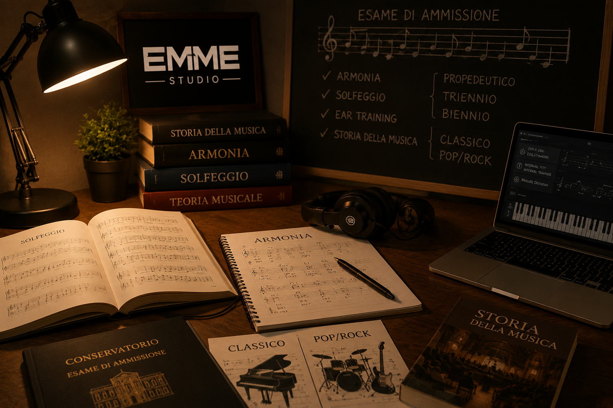

Il tuo percorso accademico
Il corso di Preparazione al Conservatorio di EMME STUDIO è pensato per studenti che desiderano affrontare gli esami di ammissione ai Conservatori statali e privati, seguendo un percorso strutturato, inclusivo e personalizzato.
Le lezioni sono rivolte a studenti di ogni livello: preparazione Propedeutica, Triennio e Biennio, sia per percorsi di musica Classica sia per indirizzi Pop/Rock e musica moderna.
Durante il percorso verranno affrontate tutte le materie fondamentali richieste durante gli esami di ammissione: armonia, solfeggio, ear training, teoria musicale, storia della musica e preparazione pratica strumentale.
Ogni studente seguirà un programma costruito in base agli obiettivi, al livello di preparazione e alle richieste specifiche del Conservatorio scelto, lavorando progressivamente su competenze tecniche, teoriche e musicali.
L’obiettivo del corso è fornire allo studente gli strumenti necessari per affrontare gli esami con maggiore consapevolezza, sicurezza e preparazione, sviluppando al tempo stesso metodo di studio, autonomia e maturità musicale.